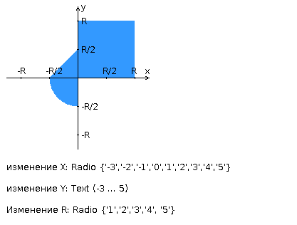

Задание
Разработать PHP-скрипт, определяющий попадание точки на координатной плоскости в заданную область, и создать HTML-страницу, которая формирует данные для отправки их на обработку этому скрипту. Параметр R и координаты точки должны передаваться скрипту посредством HTTP-запроса. Скрипт должен выполнять валидацию данных и возвращать HTML-страницу с таблицей, содержащей полученные параметры и результат вычислений - факт попадания или непопадания точки в область. Кроме того, ответ должен содержать данные о текущем времени и времени работы скрипта.
Разработанная HTML-страница должна удовлетворять следующим требованиям:
- Для расположения текстовых и графических элементов необходимо использовать блочную верстку.
- Данные формы должны передаваться на обработку посредством POST-запроса.
- Таблицы стилей должны располагаться в самом веб-документе.
- При работе с CSS должно быть продемонстрировано использование селекторов классов, селекторов атрибутов, селекторов потомств, селекторов элементов а также такие свойства стилей CSS, как наследование и каскадирование.
- HTML-страница должна иметь "шапку", содержащую ФИО студента, номер группы и новер варианта. При оформлении шапки необходимо явным образом задать шрифт (sans-serif), его цвет и размер в каскадной таблице стилей.
- Отступы элементов ввода должны задаваться в процентах.
- Страница должна содержать сценарий на языке JavaScript, осуществляющий валидацию значений, вводимых пользователем в поля формы. Любые некорректные значения (например, буквы в координатах точки или отрицательный радиус) должны блокироваться.

Вопросы к защите лабораторной работы:
- Протокол HTTP. Структура запросов и ответов, методы запросов, коды ответов сервера, заголовки запросов и ответов.
- Язык разметки HTML. Особенности, основные теги и атрибуты тегов.
- Структура HTML-страницы. Объектная модель документа (DOM).
- HTML-формы. Задание метода HTTP-запроса. Правила размещения форм на страницах, виды полей ввода.
- Каскадные таблицы стилей (CSS). Структура - правила, селекторы. Виды селекторов, особенности их применения. Приоритеты правил. Преимущества CSS перед непосредственным заданием стилей через атрибуты тегов.
- Клиентские сценарии. Особенности, сферы применения. Язык JavaScript.
- Синхронная и асинхронная обработка HTTP-запросов. AJAX.
- Серверные сценарии. CGI - определение, назначение, ключевые особенности.
- FastCGI - особенности технологии, преимущества и недостатки относительно CGI.
- Язык PHP - синтаксис, типы данных, встраивание в веб-страницы, правила обработки HTTP-запросов. Особенности реализации принципов ООП в PHP.